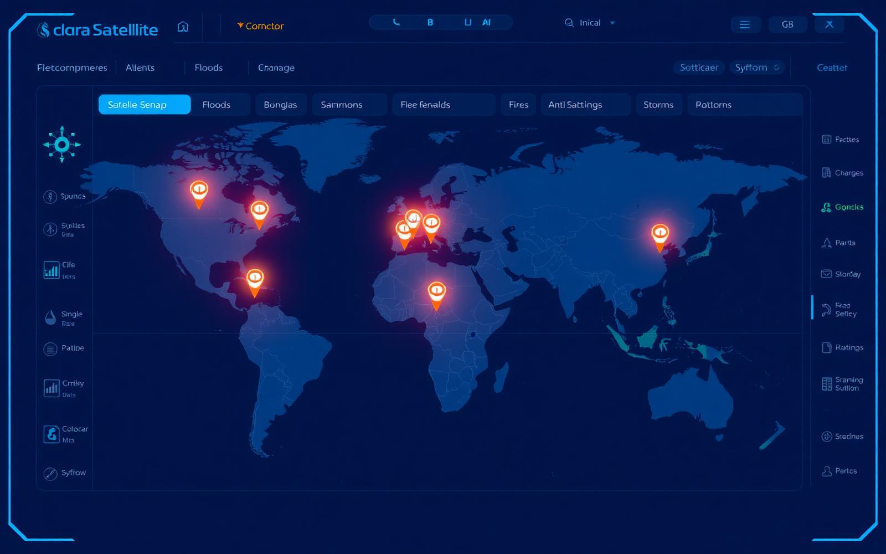

Satelites ativos
Mission Control
Monitoramento em tempo real
Constelacoes orbitais integradas, eventos ambientais geolocalizados e prontidao operacional 24/7.
Latencia media
Eventos hoje
Alertas criticos
Dados climaticos reais via Open-Meteo. Alertas orbitais e satelites sao indicadores demonstrativos do prototipo.
Mapa orbital global

Tempo real
Previsao real das regioes monitoradas
Temperatura, chuva, vento e risco calculado no navegador com base nos dados atuais da Open-Meteo.
Conectando com Open-Meteo
Aguardando atualizacao.